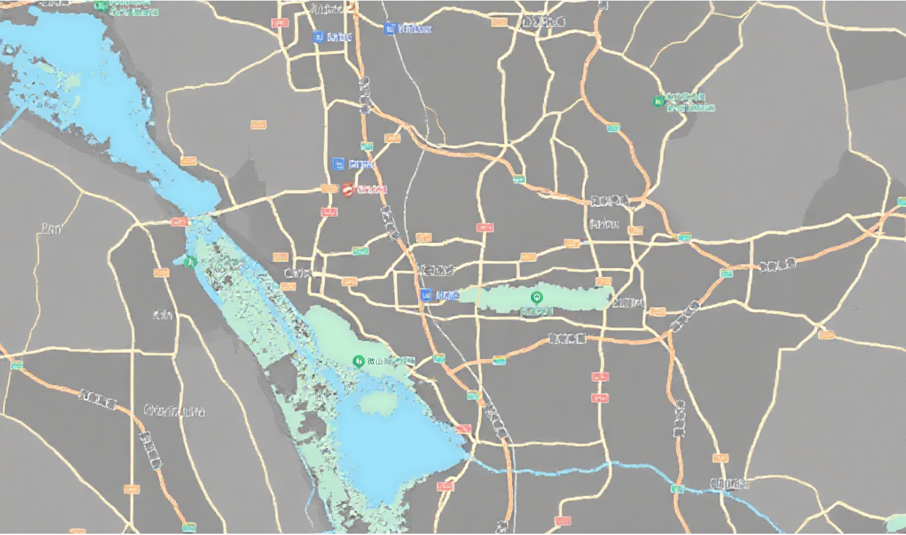
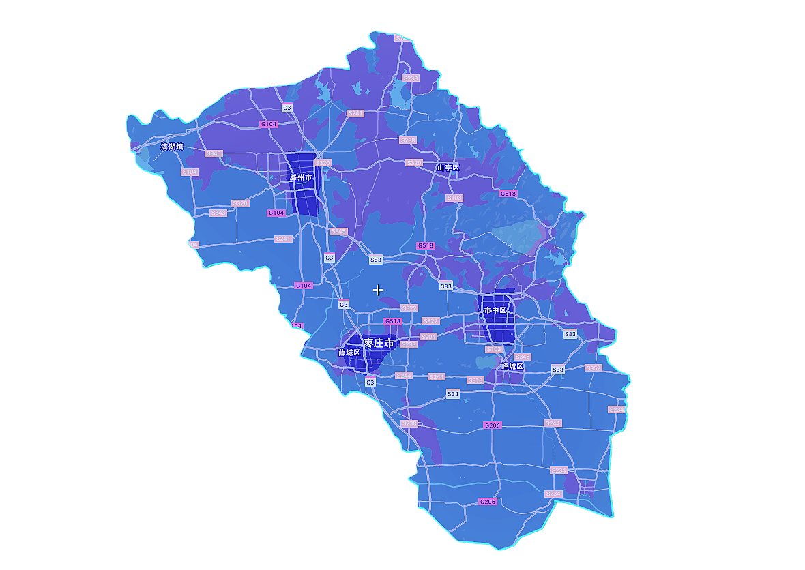

近7天
近30天
本周
上周
本月
上月
今年
去年
全部地区
中心街街道
赛瓦街道
文化路街道
东方红街道
和兴街道
东湖街道
龙山街道
通源街道
西王庄镇
齐村镇
陶庄镇
孟庄镇
临城街道
沙沟镇
周营镇
常庄镇
陶庄镇
张范镇
坛山街道
吴林街道
曹庄街道
峄城镇
吴家镇
官庄村
谢庄镇
古邵镇
阴平镇
运河街道
马兰屯镇
泥沟镇
张山子镇
山亭镇
涧头集镇
山城街道
冯卯镇
城头镇
店子镇
徐庄镇
北庄镇
桑村镇
水泉镇
西集镇
龙泉街道
荆河街道
北辛街道
善南街道
东沙河镇
郭庄镇
龙阳镇
界河镇
官桥镇
西岗镇
姜屯镇
鲍沟镇
大坞镇
滨湖镇
南沙河镇
级索镇
木石镇
羊庄镇
张汪镇
洪绪镇
"枣解决 枣满意"数智化平台
柔性督办
主动治理工作台
AI报告
×


数据融合
12345来电
已接入
"两枣"网络端
已接入
市场主体
已接入
110转接
已接入
市政府网站
已接入
省政府网站
已接入
省接诉即办
已接入
中国政府网留言
已接入
互联网+督查
已接入
12345来电
已接入
"两枣"网络端
已接入
市场主体
已接入
110转接
已接入
市政府网站
已接入
省政府网站
已接入
省接诉即办
已接入
中国政府网留言
已接入
互联网+督查
已接入
1,234,567
数据总量（条）
8,901
今日新增
"枣解决 枣满意"善治指数
民生指数
Public Welfare Index
85.6
市场主体指数
Market Entities Index
82.3
督办效果
1,234
督办事项总数
1,156
已完成
93.7%
完成率
主动治理成效
关注人群高频诉求
治理挑战指数
治理事项
地区
分值
数据融合概览
×
AI数据总结
"枣解决 枣满意"善治指数详情
×
请选择左侧二级指标查看详情
AI分析
×
诉求来源
时间
地点
诉求内容
柔性督办
×
数据分析结果摘要
▼
推送单位选择
一键全选
推送频率制定
日
周
季度
立即推送
定时推送
主动治理工作台
帮办助手
×
暂无推送任务
从"柔性督办"推送的任务将显示在这里
×
×
数据分析详情
×
关注人群详情
×
人数统计
AI分析
AI正在分析中...
地区分布
诉求占比
高频诉求类型
诉求多元化详情
×
数据统计
AI分析
AI正在分析中...
诉求分类下钻
治理挑战指数详情
×
分值构成
AI分析
AI正在分析中...
治理建议
关注人群高频诉求详情
×
详细统计
人群信息
新市民劳动者
重点关注人群
高频诉求
住房保障
12,456件
诉求占比
45.2%
较上月 ↑ 3.2%
AI分析
AI正在分析中...
主动治理成效详情
×
详细统计
总体诉求
治理前
156件
→
治理后
98件
-37.2%
疑难诉求
治理前
23件
→
治理后
12件
-47.8%
高频诉求
治理前
45件
→
治理后
18件
-60.0%
AI分析
AI正在分析中...
督办效果详情
×
督办事项统计
1,234
督办事项总数
1,156
已完成
78
待处理
完成率统计
93.7%
总体完成率
按时完成率
89.2%
超期完成率
4.5%
平均处理时长
2.3天
AI分析
AI正在分析中...
AI助手
×
您好,我是您的AI助手
如果还没想好,您可以试着问我:
请详细分析最近一个月各区域的诉求分布情况，包括趋势变化、主要问题类型及其占比，并提供针对性的治理建议
基于历史数据和当前治理效果，预测未来一季度民生善治指数的变化趋势，并深入分析影响指数变化的关键因素
综合分析督办效果与主动治理的关系，评估两者协同作用对整体治理效能的影响，并提出优化方案
对比分析重点人群与新业态人员的管理现状，识别潜在风险点，并提出差异化的治理策略
开启新对话
发送
→
关注人群
智能预测
未来一周
未来一月
未来一季
预测诉求量
1,234
主要趋势
↑ 上升 15%
主要原因分析
季节性因素：夏季高温导致环境类诉求增加
影响权重: 35%
政策变化：新政策实施引发咨询类诉求上升
影响权重: 28%
区域发展：城市建设带来相关投诉增多
影响权重: 22%
诉求多元化
管理
"枣解决 枣满意"数智化平台
用户登录
用户名
密码
记住我
忘记密码？
登录
主要原因分析详情
×
AI总结
AI正在分析中...
AI预测原因分析
AI正在分析中...
系统管理
×
🏢
基础组织管理
组织架构、部门管理
🔐
权限管理
角色权限、用户权限
🤖
模型管理
AI模型配置、训练
👤
智能体管理
智能体配置、调度
💾
数据库管理
数据源、连接配置
🔌
API管理
接口配置、调用管理
📊
指数管理
指数配置、计算规则
🔑
密码管理
密码策略、重置